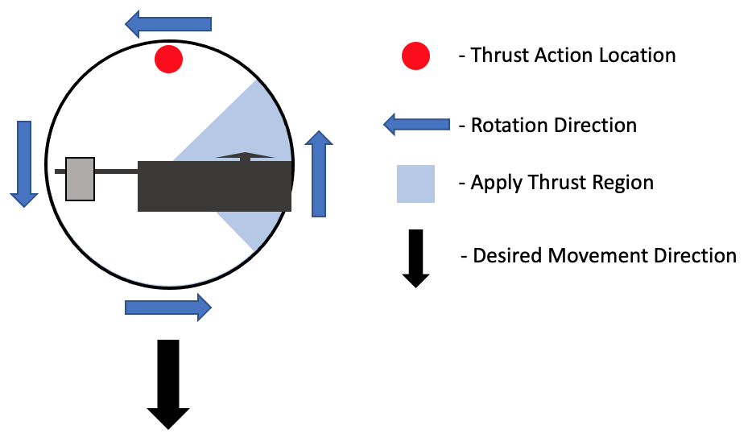

The following monocopter project was one of the projects I worked on as a Research Assistant at the Royal Military College of Canada (RMC). The purpose of the monocopter was to function as an educational tool for undergraduate students and to be used to test the lift produced by a wing without the need for a wind tunnel.
Project Description
When I started work on this project, much of the groundwork had been laid out. The size, rotation rate, wing shape and required weight were parameters that had already been determined by my supervisor Dr. Ruben E. Perez. My task was to design and build the avionics for the monocopter. The final design had to be controllable with a standard RC transmitter, be able to wirelessly transmit sensor data back to a computer, and have a weight less than 400 grams (total max weight of monocopter).
Monocopter Design
The avionics were built around the Arduino Nano. Wireless data transmission was done with the HC-05 bluetooth module which allowed for simple, direct communication with a laptop. The sensor module used to determine the position, and speed of the monocopter was the MPU9250 9-axis sensor (an all in one gyro, accelerometer and compass). A standard RC receiver was use to read the signal coming from the radio controller. However, output from the reciever was not plugged directly into the motor given the need to modify the incoming signal for moncopter control.
Controlling Direction
In order to control the direction of travelling for a monocopter it is important to understand gyroscopic precession. Gyroscopic precession is the deflection of a spinning object approximately 90° out of phase from where the force is applied. Below is a schematic showing how this effects the control of the monocopter:

A diagram showing the effect of gyroscopic precession.
Extra thrust can be applied in 2 main ways: by cyclically adjusting the pitch of the monocopter wing or by cyclically adjusting the speed of the monocopter rotation. To reduce additional weight and complexity caused by creating a servo and flap mechanism on the wing, I chose to cyclically control the speed of rotation. As the RC recievers typically have outputs to control servos on RC planes, these PWM signals had to be fed into the arduino whereby and mapped to a given thrust location and speed.
Testing
Upon building the monocopter, it was attached to a guide wire and allowed to fly. Initial tests only involved using the throttle. With these tests we were able to confirm the basic mechanical functioning of the monocopter as well as test the data acquisition and start-up routine of the monocopter. A video of one such test flight is shown below:
A plot of the total earnings (scaled) of the simple network trader in blue along with the performance of the market in red.
Future Work
The direction control of the monocopter has not been fully worked out. Initial tests showed that the cyclic rotation rate increases of the monocopter wing were not sufficient to accurately control the monocopter flight direction. We suspect that this is due to a poor quality ESC and motor which might effect how quickly the motor can throttle up and throttle back down.Therefore future work on this project would likely involve trying out a better ESC/motor combination or adding a flap to the monocopter wing.